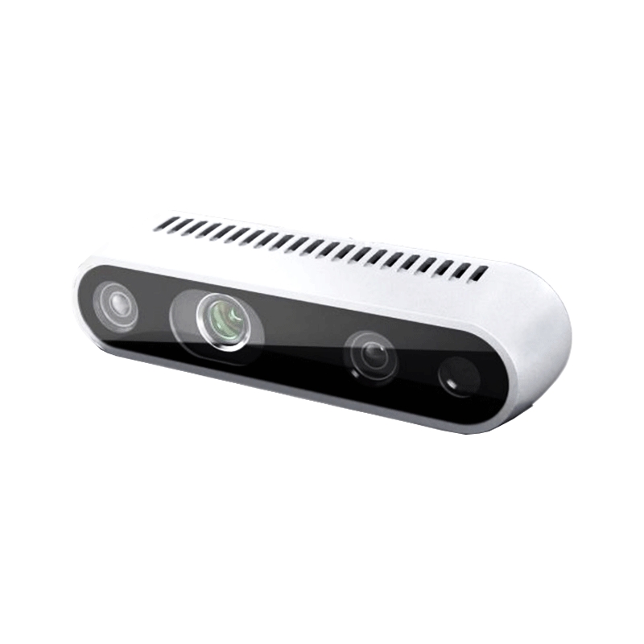
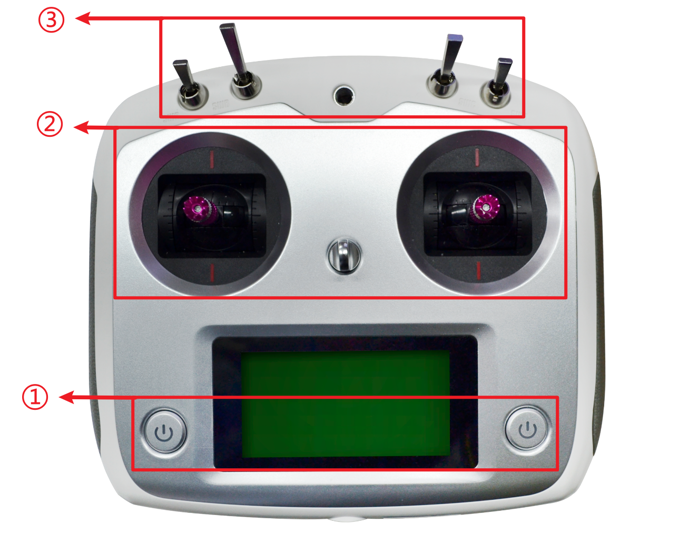

硬件模块介绍
板载计算机

板载计算机上预装了Ubuntu18.04操作系统以及ROS Melodic系统，并搭载有无人车的ROS功能包amovcar、各种传感器的驱动以及常用开发软件等。 并通过有线连接的方式接入由Homer图数传组成的局域网中。
飞控

飞控全称飞行控制器，配合无人机/无人车及其系统以及其他元器件共同来控制无人机飞行或无人车 ，飞控常与IMU（惯性测量单元）、气压计、磁罗盘等元器件共同组成飞行控制系统。
图中展示了无人车使用的飞行控制器（Pixhawk4），在这里对无人车常使用的接口做一个介绍：
1. POWER1： 飞控的电源接口，由小车底盘电源通过降压模块给到飞控，供电电压为5V。
2. TELEM1： Wifi数传的数据接口，使飞控能够接入Wifi数传提供的局域网中。
3. TELEM2： 连接板载计算机的接口，飞控通过TELEM2与板载计算机建立通信连接，板载计算机的控制数据 也通过这个接口发送到飞控中。
4. PPM RC： 遥控器接收器信号接口，该接口会接收来自遥控器的控制信号。
5. GPS MODULE： GPS模块的接口，给GPS模块进行供电以及接收GPS模块传递的数据。
6. I/O PWM OUT： 电机控制的PWM输出口，输出控制数据控制四个电机。
激光雷达
激光雷达采用蓝海光电LDS-50C-3 360°激光扫描测距雷达，内部搭载高性能脉冲TOF测距系统，即使在远距离物体 条件下，测量精度依旧精准、稳定。激光雷达可以帮助R300实现室内、室外精准避障。
T265双目相机

英特尔® 实感™ 追踪摄像头 T265 包含两个鱼眼镜头传感器、一个 IMU 和一个英特尔® Movidius™ Myriad™ 2 VPU。所有的 V‑SLAM 算法都直接在 VPU 上运行，能够实现非常低的延迟和非常高效的功耗。 通过视觉与IMU以及V-SLAM算法的结合，T265双目相机能为无人车提供定位数据。
D435i深度相机
英特尔® 实感™ D435i在尖端立体深度摄像头中放置了一个IMU。D435i在小巧外形中采用英特尔模块和视觉处理器，是一个功能强大的一体产品，可与可定制软件配合使用，是一款能够了解自身运动的深度摄像头。
Homer图数传

Homer图数传模块建立起一个局域网，将无人车上的板载计算机、飞控、RTK等车载硬件以及用户的电脑接入到局域网中。方便用户远程访问无人车的飞控和板载计算机，进而实现远程控制以及数据监听。
注解
放置在车上的Homer称为 移动端Homer
与用户PC连接的Homer称为 基站端Homer
RTK模块

RTK(Real Time Kinematic)，即实时动态测量技术，又称差分GPS。该模块用于在室外定位无人车，其定位精度为厘米级。
注解
放置在车上的RTK称为 移动端RTK
与地面端Homer连接的称为 基站端Homer
放置在小车上的RTK，并且RTK内部插入4G电话卡称为 移动端RTK（4G）
显示器
显示器采用10英寸无触摸屏幕，1024 * 600 分辨率，支持 HDMI接口，适用于树莓派、NX、nano、x86等设备。
3S电池

3S电池用于给 基站端Homer 和 基站端RTK 供电。3S电池满电电压12.6V。
警告
3S电池过充过放容易导致电池损坏，在电压低于 11V 时建议停止继续使用，待电池冷却至常温后充电，充满电后也不要立即使用，待电池冷却至常温后使用。
遥控器
1. 开关机按钮：两个按钮同时按下将开启或关闭遥控器，开机时，遥控器上部分的档杆（四个SW*档杆）需 全部打至顶端， 关机时，遥控器需与遥控器接收器断开连接（断开遥控器或接收器的电源）。
摇杆：左侧摇杆上下移动控制无人车前进后退，右侧摇杆左右移动控制无人车左右移动。
3. 档杆：R300无人车中从左往右数第二根档杆(SWB)控制无人车的模式，一共有两档， 中间位置无人车受遥控器控制，顶端位置无人车受板载计算机控制。 SWC挡杆控制无人车灯光模式，最上端为呼吸灯模式，中间为常亮模式，最下端为常闭模式。SWD挡杆控制无人车切换高速和低速模式。